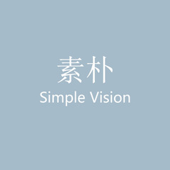
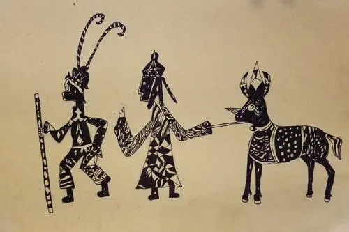

Home
ARTSY COMMUNITY
STM摄影联盟
STM摄影联盟，成立于2021年8月，由20名专业摄影师、摄影记者和摄影爱好者共同创办，是一个聚齐全国各地优秀摄影师的摄影交流组织。
摄影研习社
这里是摄影研习社的交流地，这里有摄影小白的第一手福利；在这里你可以了解到如何摄影；在这里你可以分享你的照片。

Seeker光影联盟
我们新奇且对生活充满十足的激情，热衷于探索自然和城市之美的同时向大家传递世间的美好。期待你能在这里遇上一群有趣的灵魂！

{{logintext1}}
{{logintext}}